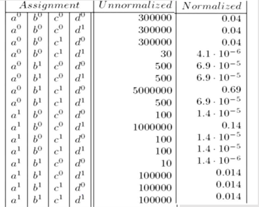

Markov models, also known as Markov chains, are a type of probabilistic graphical model that represents a sequence of events or states, where the probability of transitioning from one state to another depends only on the current state and is independent of past states. Markov models are named after the mathematician Andrey Markov, who developed the theory behind them.
Markov models are useful in modeling a variety of phenomena where one cannot naturally ascribe a directionality to the interaction between variables.
The undirected models also offer a different and often simpler perspective on directed models, in terms of both the independence structure and the inference task.
In this section we will also see a combined framework that allows both directed and undirected edges.
Why we need Markov Models
Consider a scenario where we have four students who get together in pairs to work on the homework for a class.
1. Alice and Bob
2. Bob and Charles
3. Charles and Debbie
4. Debbie and Alice.
Alice and Charles just can’t stand each other, and Bob and Debbie had a relationship that ended badly.
In this example, the professor accidentally misspoke in class, giving rise to a possible misconception among the students in the class. Each of the students in the class may subsequently have figured out the problem, perhaps by thinking about the issue or reading the textbook.
In subsequent study pairs, he or she may transmit this newfound understanding to his or her study partners.
We therefore have four binary random variables, representing whether the student has the misconception or not
Because Alice and Charles never speak to each other directly, we have that A and C are conditionally independent given B and D. Similarly, B and D are conditionally independent given A and C.
We can try to represent this distribution using Bayesian Network, but it encodes the independence assumption that (A ⊥ C | {B, D}). However, it also implies that B and D are independent given only A, but dependent given both A and C. Hence, it fails to provide a perfect map for our target distribution.
Another attempt, shown in figure (c), is equally unsuccessful. It also implies that (A⊥ C | {B, D}), but it also implies that B and D are marginally independent.
(a) Represents study pairs over 4 students
(b) Represents first attempt at bayesian network model
(c) Represents second attempt at bayesian network model
All other candidate BN structures are also flawed, so that this distribution does not have a perfect map.
Independencies (A ⊥ C | {B, D} and (B⊥ D | {A,C} cannot be naturally captured in a Bayesian network.
Bayesian network requires that we ascribe a directionality to each influence.
In this case, the interactions between the variables seem symmetrical, and we would like a model that allows us to represent these correlations without forcing a specific direction to the influence.
Markov Network: A representation that implements this intuition is an undirected graph. As in a Bayesian Network, the nodes in the graph of a Markov network represent the variables, and the edges
correspond to a notion of direct probabilistic interaction between the neighboring variables (an interaction that is not mediated by any other variable in the network).
In this case, the graph of figure (a), which captures the interacting pairs, is precisely the Markov network
structure that captures our intuitions for this example.
The remaining question is how to parameterize this undirected graph.
Because the interaction is not directed, there is no reason to use a standard CPD, where we represent the distribution over one node given others. Rather, we need a more symmetric parameterization.
Intuitively, what we want to capture is the affinities between related variables.
For example, we might want to represent the fact that Alice and Bob are more likely to agree than to disagree.
We associate with A,B a general-purpose function, also called a factor:
Hence we introduce the Φ function. It is also known as the affinity function or the compatibility function or the soft constraint
But this formula as normal probability won’t work here as the values are not in binary or continuous values. So, it's an unnormalized measure. Hence the tilde ~ on P.
Z is called Partition Function or normalizing constant.
If we divide Unnormalized values by Z then we get Normalized Values.
Z = sum of all un-normalized values

Pairwise Markov Networks
A pairwise Markov Network is an undirected graph whose nodes are X1, X2,....Xn and each edge Xi--Xj is associated with a factor (potential) Φij (Xi--Xj)
Consider a fully connected graph over X.
In this case, the graph specifies no conditional independence assumptions, so that we should be able to specify an arbitrary joint distribution over X.
If all of the variables are binary, each factor over an edge would have 4 parameters, and the total number of parameters in the graph would be 4(nc2)
However, the number of parameters required to specify a joint distribution over n binary variables is 2n-1.
Thus, pairwise factors simply do not have enough parameters to encompass the space of joint distributions.
More intuitively, such factors capture only the pairwise interactions, and not interactions that involve
combinations of values of larger subsets of variables.
The key aspect to note about this definition is the fact that the two factors φ1 and φ2 are multiplied in a way that “matches up” the common partY .
General Gibbs Distribution
A distribution PΦ is a Gibbs distribution parameterized by a set of factors Φ = {φ1(D1),......, φK(DK)}
if it is defined as follows:
We say that a distribution PΦ with Φ = {φ1(D1), . . . , φK(DK)} factorizes over a Markov network H if each Dk (k = 1, . . . , K) is a complete subgraph of H.
Gibbs Distribution with factors
This is called Family of Conditional distribution over X.
Induced Markov Networks
Induced Markov Network Hφ has an edge Xi-Xj, whenever there exists φ ε Φ such that Xi, Xj ε D m
For any node X and Y in a network, the two important conditions are -
If they appear together in some factor φ.
If there exists a factor φ(X, Y)
An edge in the network between two nodes means that those two nodes can influence each other directly. If X and Y occur in the same factor, then that means they can influence each other directly.
Summary of Gibbs and Markov
Gibbs Distribution represents distribution of products of factors.
The Induced Markov network connects every pair of nodes that are in the same factor.
Markov network structure doesn’t fully specify that factorization of P.
Separation in Markov Models
Definition: X and Y are separated in H given Z if there is no active trail in H between X and Y given Z
I-map (Independence map) refers to a set of independence statements or conditional independence relationships that hold true in the model. It represents the graphical structure of the model in terms of the independence assumptions it makes.
If P factorizes over H, and SepH(X, Y |Z) then P satisfies (X ⊥ Y|Z)
If P satisfies I(H), we say that H is an I-map (Independency Map) of P
If P factorizes over H, then H is an I-map of P
Minimal I-Map
A minimal I-map is an i-Map without any redundant edges. But, a minimal I-Map still may not capture I(P)
Perfect I-Map
Bayesian Networks cannot be used to create either minimal I-Maps or perfect I-Maps accurately. Hence, Markov Models are used instead.
Perfect Map: I(H)=I(P)
H perfectly captures independencies in P
(The correlation between difficulty of a test (D), intelligence of the student (I) and the grades of the student (G) is to be created)
I-Equivalence
Two graphs G1 and G2 over X1, x2, ..., Xn are I-equivalent of I(G1)=I(G2)
Consider the following example -
All these have dependency (X ⊥ Z |Y). Hence, these graphs are I-Equivalent